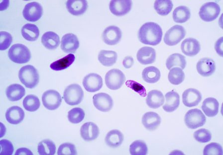
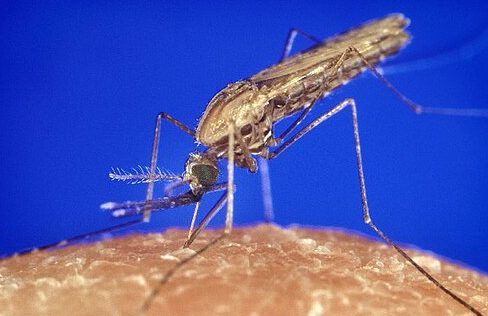
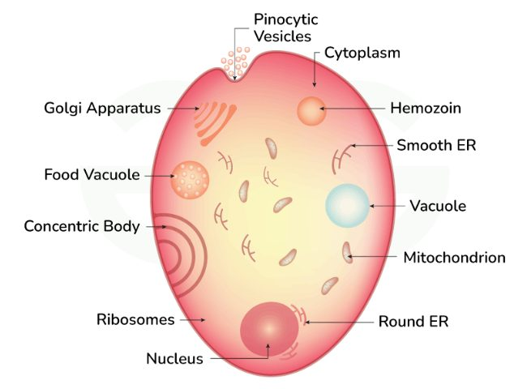
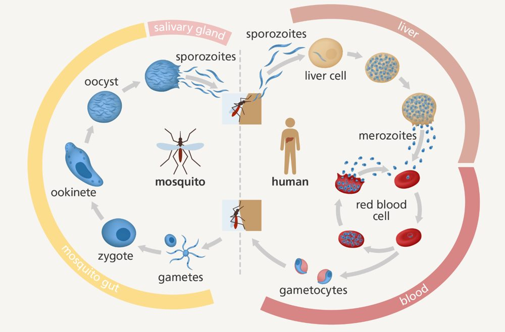

Case study: a malaria outbreak
The Australian Centre for Disease Control (CDC) was established in January 2024 in response to recent global health threats. The Australian Government created a specialised strike team trained to investigate disease outbreaks, identify unknown pathogens and prevent further spread.
A call has just come in from a physician in Papua New Guinea. She reports that hundreds of people in several villages have become seriously ill. Their symptoms include fever, chills, severe headaches and muscle pain, and in some cases convulsions and organ failure. Several people have already died.
The strike team packs its mobile laboratory, microscopes, diagnostic tests and insect-control equipment, plus personal protective equipment including gloves, masks and insect-repellent clothing. They fly to Papua New Guinea the next day.
On arrival, they find that the outbreak has spread rapidly through communities living near swampy areas where stagnant water is common. Temporary clinics are crowded with patients, and many caregivers are afraid of catching the illness.
The team takes blood samples and performs basic laboratory tests. The results:
- Microscopy of blood samples shows pathogenic organisms living inside red blood cells.
- The pathogen cannot be cultured on agar plates.
- Many villagers report being bitten by mosquitoes in the evenings.



The team identifies the pathogen as Plasmodium falciparum, the parasite responsible for malaria. It is transmitted by Anopheles mosquitoes, which are common in the region.
Questions (30 marks)
On arriving in the outbreak zone, what immediate actions should the strike team take to protect themselves while also preventing further spread in the community?
- Wear personal protective equipment (gloves, masks, protective clothing) and use insect repellent or mosquito nets to avoid infection (1 mark).
- Isolate sick patients and set up infection-control procedures (safe handling of blood, proper waste disposal, hand hygiene) to stop further spread in the community (1 mark).
The disease was identified as malaria. Define an infectious disease, and explain, using evidence from the case study, why malaria is classified as infectious.
An infectious disease is an illness caused by a pathogen that can be spread from one host to another (1 mark).
Malaria is infectious because the protozoan parasite (Plasmodium falciparum) is passed between people by mosquito bites, as described in the case study (1 mark).
Malaria is considered virulent. What is virulence? Give evidence from the case study to show that malaria is virulent.
Virulence is the ability of a pathogen to cause damage (severe disease) in the host (1 mark).
The case study says it causes severe illness, convulsions, organ failure and death (1 mark).
What type of pathogen causes malaria? Use evidence from the case study to support your answer.
A protozoan parasite, Plasmodium falciparum (1 mark).
Evidence: it lives inside red blood cells, cannot be grown on agar, and is a single eukaryotic cell (1 mark).
Question 4 (5 marks)
Below is a simplified diagram of the life cycle of the malaria parasite.

- What organism transmits the malaria parasite to humans?
- What type of human cells are destroyed by Plasmodium during the blood stage of infection?
Why is the Anopheles mosquito considered both a host and a vector in the malaria life cycle?
It is a host because the parasite develops and reproduces inside it (1 mark), and a vector because it transmits the parasite to humans (1 mark).
Explain why malaria cannot spread directly from one person to another without a mosquito.
The parasite needs part of its life cycle to happen inside the mosquito before it can infect another person.
Question 5 (5 marks)
What treatment should be given to patients suffering from malaria?
Antimalarial drugs (e.g. artemisinin-based combination therapy).
Would using hand sanitiser be effective at controlling the spread of the malaria parasite? Explain.
No (1 mark), because the disease is spread by mosquito bites, not by touching surfaces. Hand sanitiser cannot kill the parasite inside mosquitoes or stop them from biting (1 mark).
A patient decided to self-medicate by drinking some antiseptic, thinking this would help kill the pathogen. Would this have been an effective treatment?
No, drinking antiseptic would not be an effective treatment for malaria (1 mark).
Antiseptics are chemicals for use on the outside of the body (on skin) to kill microbes; they don't target protozoan parasites inside the body's cells, and drinking them is harmful (1 mark).
Malaria is regularly found in Papua New Guinea and continues to affect people there each year. Would this be described as endemic, epidemic or pandemic? Explain.
Endemic (1 mark), because malaria is consistently present in Papua New Guinea and occurs every year at a fairly steady rate, rather than as a sudden increase in cases (1 mark).
Question 7 (6 marks)
The female Anopheles mosquito acts as a vector, spreading Plasmodium from an infected person to an uninfected person. What part of the first line of defence failed in this example?
The skin: it was no longer intact (the mosquito pierced it).
When a mosquito bite introduces Plasmodium into the body, the skin around the bite often becomes red, swollen and itchy. What causes these signs of inflammation, and how does this response help protect the body?
- The redness, swelling and itchiness are caused by the release of histamines from mast cells at the bite site (1 mark).
- Histamines make blood vessels widen and become leaky, letting more white blood cells and fluid into the tissue (1 mark).
- This helps the body fight the pathogen and stops the infection spreading (1 mark).
How do B cells help the body fight off and recover from a malaria infection?
B cells (as plasma cells) produce antibodies that attach to the parasite, neutralising it and marking it for destruction by other immune cells (1 mark).
Some B cells become memory cells, so the body can respond faster if infected again (1 mark).
After a patient has recovered from malaria, are they protected (immune) from the disease? Explain.
Either answer is accepted with a valid explanation:
- Yes: memory B cells remain after the infection, ready to quickly produce antibodies if they meet it again.
- No, only partial immunity: Plasmodium changes its antigens, so the memory B cells no longer recognise them. (This is the case in reality: people can catch malaria many times.)
After the outbreak has been controlled, what advice would the strike team give the Papua New Guinea Government to prevent further outbreaks?
Any 3 of:
- Drain stagnant water (where mosquitoes breed).
- Provide insecticide-treated nets and repellent.
- Health education.
- Distribute preventive (antimalarial) medication.